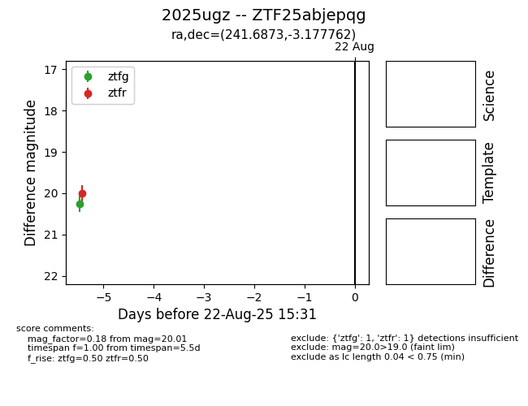

Target 2025ugz at 2025-08-21 11:20, see:
FINK: fink-portal.org/ZTF25abjepqg
Lasair: lasair-ztf.lsst.ac.uk/objects/ZTF25abjepqg
ALeRCE: alerce.online/object/ZTF25abjepqg
TNS: wis-tns.org/object/2025ugz
YSE: ziggy.ucolick.org/yse/transient_detail/2025ugz
alt names
ZTF25abjepqg (ztf,alerce)
2025ugz (tns,yse)
coordinates:
equatorial (ra, dec) = (241.6873,-3.17776)
galactic (l, b) = (8.0201,+34.03659)
photometry
last ztfg=20.26, ztfr=20.01
1 ztfg, 1 ztfr detections
